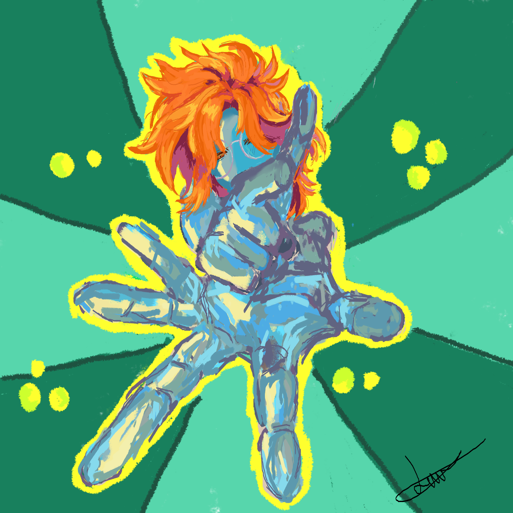
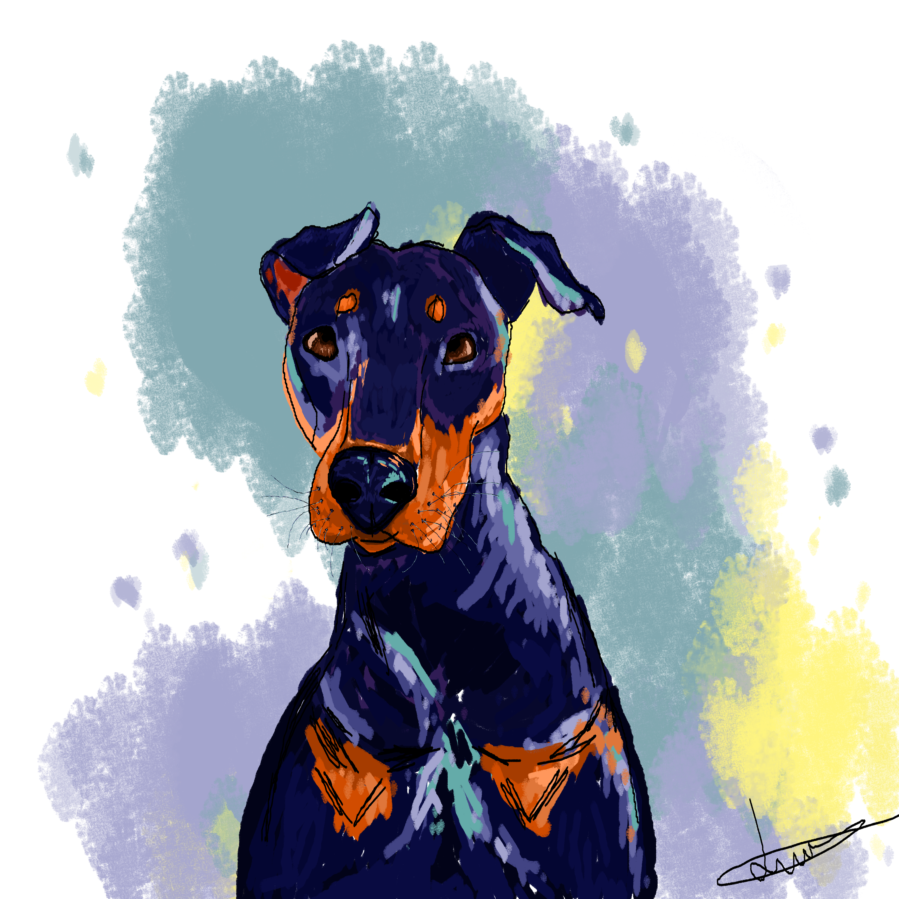
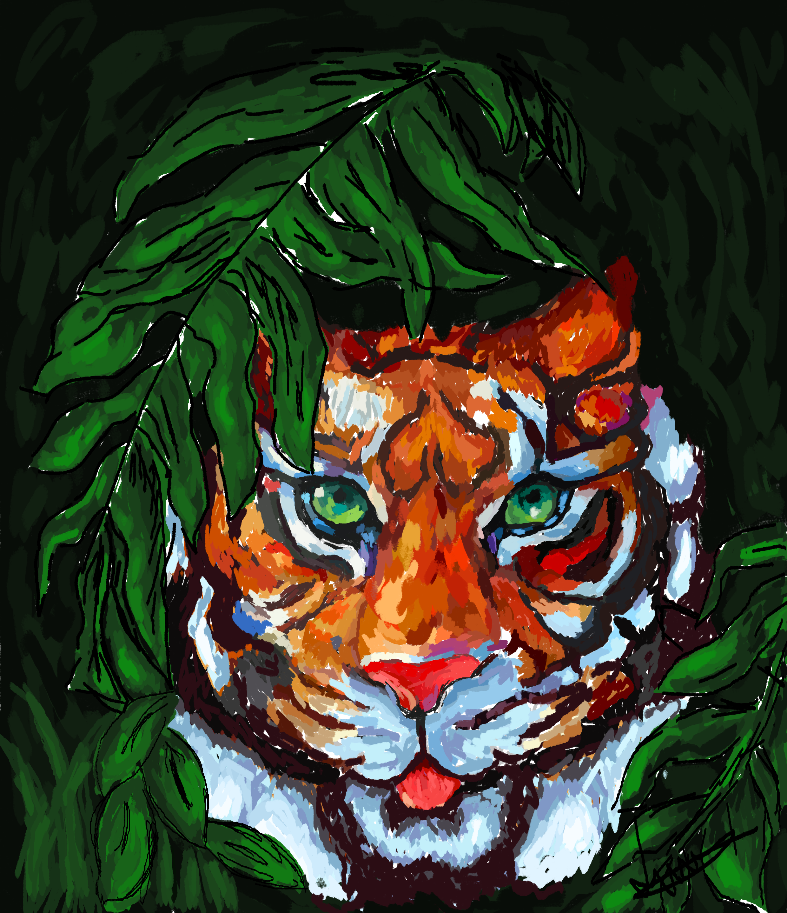
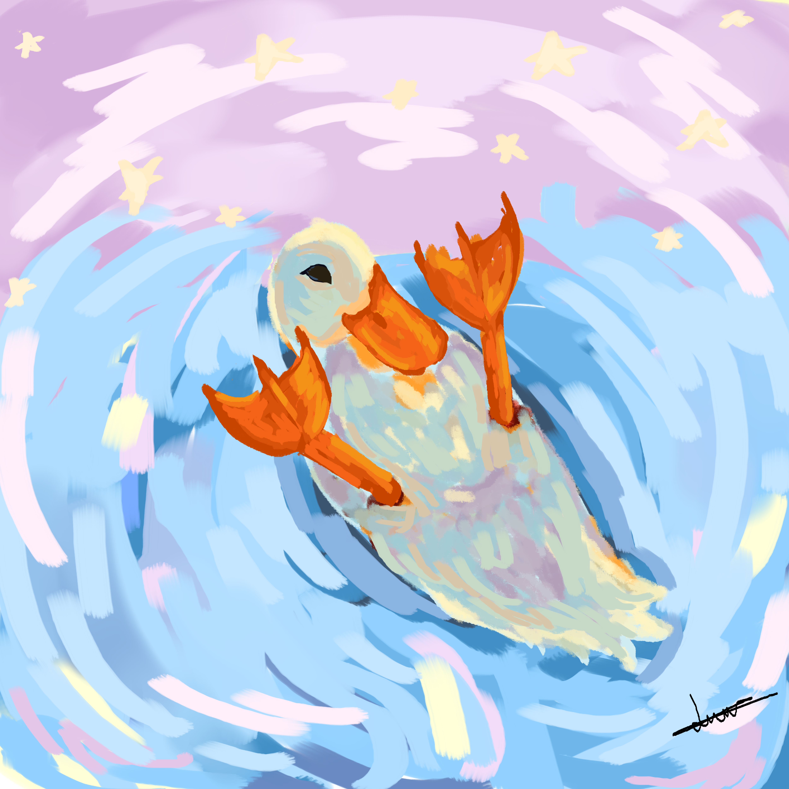
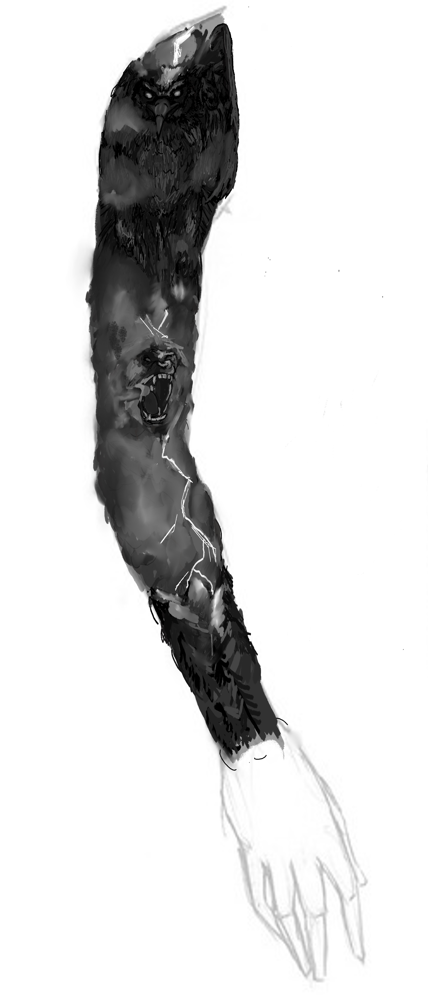

Welcome to my little collection of artwork!
Here you'll find illustrations inspired by animals, nature and imagination. Every piece is created with care, and I hope they bring a little warmth and joy.
While I've spent many years creating traditional artwork, I've only recently begun my journey into digital illustration. This gallery will continue to grow as I complete new pieces, and I'm excited to share that journey with you.
 ©DrawWithLivv
©DrawWithLivv
Lil' Duckie
A little duckie I brought to life through colour, texture and imagination. Every brushstroke tells part of the story.

©DrawWithLivvPerspective fun
I created this when messing with perspective, You can see here I have experimented with both perspective and an abundance of colour.

©DrawWithLivvCustom Pet Portrait
This is the finished product of a pet portrait I recently completed, this piece was probably one of my favourite styles of drawing I have been asked to complete so far. I loved experimenting with colours and adding the highlights in the fur and whiskers that brought this pet to life through the image.

©DrawWithLivvCurious Tiger
This piece I probably spent too much time on, BUT I think that made for a beautiful illustration of a tiger hidden in abundants of foliage. This piece was largely inspired by the curious look on a tigers face when on alert and I really wanted to show the POP of the saturated reds in the tiger by contrasting it with the green eyes and foliage.

©DrawWithLivvLaying Duck
This is a silly little duckie floating on its back in it's own little world of stars. I experimented a bit with the pastels and then the harsh oranges on this one but i think they actually complement one another really well.
 ©DrawWithLivv
©DrawWithLivv
Yggdrasil Tattoo
This tattoo is a beautiful design of Yggdrasil, designed for a customer to be used as a tattoo template.

©DrawWithLivvFull sleeve
My first commissioned piece! My client asked for a beautiful custom piece, giving me artistic freedom whilst asking for 3 specific things, the eagle as focal point, lightning and a second animal - we chose gorilla.